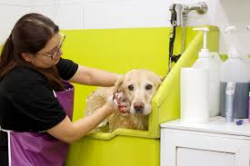
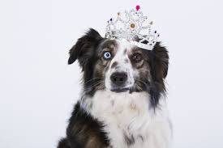
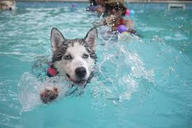

RESORT
Toelettatura
Il resort del nostro centro offre le ultime novità in fatto di acconciature, trattamenti per la pelle e la pelliccia e tecnologia per lo styling degli animali domestici per mantenere odore, aspetto e benessere dei cani e dei gatti.
I nostri stilisti professionisti lavorano con te per creare un programma toelettatura personalizzato per il tuo animale domestico.
Il prezzo finale dei servizi di toelettatura del tuo animale domestico dipenderà dal tipo di razza, dalla durata della visita, dal peso approssimativo e dal comportamento durante il processo.
SPA

Il fiore all'occhiello del nstro centro Benessere Animale è la nostra Spa, ovvero il nostro centro acquatico. Il tuo cane si godrà il tempo in una delle nostre offerte acquatiche, supervisionate da un team di esperti, che includono Nuotata privata, Fitness nuotata e Nuoto con idromassaggio.
L'esercizio in acqua calda ha numerosi benefici per gli animali domestici
- Ideale per l'artrite
- Migliorando la flessibilità
- Aumentando la resistenza
- Perdita di peso
- Rilassamento
- Migliora capacità atletica
- Miglioramento fisico post-chirurgico
- Benessere generale
Nuoto fitness
Le nuotate fitness sono un'ottima forma di esercizio a impatto zero, focalizzato sull'allenamento di resistenza e resistenza. La galleggiabilità in acqua allevia qualsiasi peso o tensione sull'articolazione del cane, rilassa il corpo e migliora la mobilità. Questa è un'ottima opzione per i proprietari di animali domestici che vogliono aumentare la massa muscolare del proprio cane o un animale che si sta riprendendo da un intervento chirurgico o da un incidente che necessita di riabilitazione. Ci sono molte ragioni per considerare che Nuoto fitness è l'ideale per i cani più giovani, i cani con eccesso di energia, i vecchi infortuni e che hanno bisogno di una nuotata terapeutica.
La nostra nuotata fitness di 30 minuti include una sessione di nuoto supervisionato individuale con il nostro specialista in acquatica. Più ospiti richiedono appuntamenti separati.
Divertente nuotata
Le nuotate divertenti sono esattamente come sembrano, divertenti! Il tuo cane può provare la gioia, il ringiovanimento e l'esercizio fisico del nuoto. Questa opzione è più adatta per i cani che amano semplicemente stare in acqua. Le nostre sessioni durano circa 20 o 30 minuti e includono spruzzi in acqua, giochi diretti con il nostro maestro di fitness e possono includere biscotti e giocattoli. I cani della stessa famiglia possono nuotare in gruppo per divertirsi ancora di più!
Idromassagio

Le sessioni di idromassaggio sono progettate specificamente per i cani con una serie di condizioni fisiche più o meno gravi. Ogni sessione di 30 minuti è una combinazione di nuoto fisso e massaggio con acqua calda. Avremo la maggior parte dei cani che indossano un giubbotto di salvataggio, che forniamo, per garantire giri controllati e facilitare i cani in piscina se non sono in grado di usare le scale. I nostri specialisti acquatici altamente qualificati personalizzeranno i movimenti terapeutici in base alle esigenze del tuo cane per aumentare la gamma di movimento e guidare lo stretching, oltre a guardare per eventuali segni che il tuo cane potrebbe aver bisogno di una pausa.
L'idromassaggio è ideale per i cani con particolari condizioni fisiche
- Artite
- Lesioni ACL
- Mielopatia degenerativa
- Paralisi
- Problemi a ossa e articolazioni
- Dolori muscolari